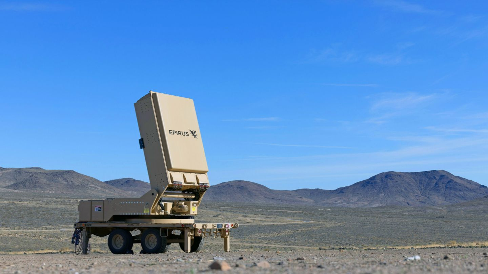

The Leonidas system is an advanced directed-energy defense platform designed to counter unmanned aerial threats using high-power microwave (HPM) technology. Developed by Epirus, it represents a significant shift away from traditional kinetic weapons such as missiles and guns, focusing instead on electronic disruption as a method of neutralizing targets.
At its core, Leonidas works by emitting powerful bursts of electromagnetic energy. These microwave pulses interfere with the electronic systems of drones, effectively disabling their communications, navigation, and control systems. Instead of physically destroying targets, the system renders them inoperable, causing them to fall from the sky or lose functionality.
One of the most important advantages of Leonidas is its ability to engage multiple targets simultaneously. In modern warfare, drone swarms—large groups of coordinated unmanned systems—pose a growing threat. Traditional defense systems may struggle to handle such scenarios efficiently, but Leonidas can disable many drones at once with a single energy pulse.
The system is highly adaptable and can be deployed in various configurations. Mobile versions can be mounted on vehicles, allowing rapid deployment to protect military bases, airports, or critical infrastructure. Fixed installations can provide continuous defense for high-value locations, while naval integration offers protection for ships operating in contested environments.
Another key benefit is its low cost per use. Unlike missiles or ammunition that must be replenished, Leonidas relies on electrical power, making it far more sustainable for repeated engagements. This efficiency makes it particularly effective in prolonged operations where large numbers of threats may be encountered.
Additionally, the system minimizes collateral damage. Because it disables electronics rather than causing explosions, it reduces the risk to surrounding infrastructure and personnel. This makes it suitable for use in urban or sensitive environments where traditional weapons might be too destructive.
Overall, the Leonidas system represents the future of counter-drone defense. Its combination of speed, scalability, and advanced technology demonstrates how modern defense strategies are evolving to address increasingly complex aerial threats.